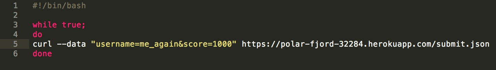
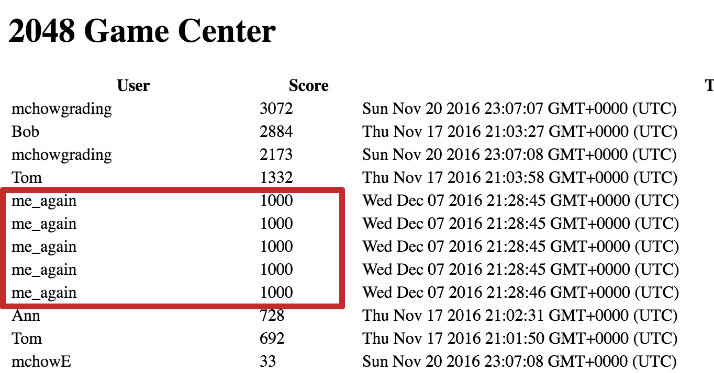
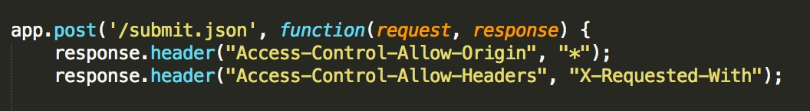

Assignment 4: Security & Privacy
Introduction
This app, which can be accessed at https://polar-fjord-32284.herokuapp.com/, is a server connecting the resulting high scores from the game 2048 to a database. The app contains several routes, including one to display all high scores, one to allow data to be added to the database, and another to see scores specific to one user. This report contains a summary of the security issues present in the app.
Methodology
To test this application, I used curl to send post requests to the server and wrote a shell script to automate what would otherwise be a time intensive process. I spent some time experimenting with database injection (through curl and the browser URL), ultimately concluding that this is actually impossible given the code structure. I also used online resources to learn about the vulnerabilities in CORS and how they can be resolved.
Abstract of Findings
There were several security flaws found in this application. The first is Cross Site Scripting (XSS), which occurs when the input supplied by users is not checked before it is used. This gives malicious users the ability to run almost any type of code, which can be used to create irritating popups or redirect the page. The next issue is the possibility of overflowing the server, due in part to its small size, but also due to a lack of authentication. Finally, there are security issues with the headers which allow anyone to access the data.
Issues Found
Issue 1: Cross Site Scripting (XSS)
- Page: /submit.json
- Severity: High. This vulnerability makes the page potentially unusable since it is subject to popups and page redirection.
- Description: This issue was discovered by sending a curl post request to the server containing a script as the data content. Since the input is not currently being sanitized, hackers can submit input that contains scripts, such as the 'Hacked by Deanna' alert.

- Proof of Vulnerability: After the curl request was sent, opening the main app page at https://polar-fjord-32284.herokuapp.com/, shows this popup message:

- Resolution: This issue can be resolved by sanitizing user input before storing it in the database. To do so in the post request route, call .replace on any data sent in as a parameter to remove potentially problematic characters. Eliminating characters needed to run scripts, such as '<', makes it impossible for these scripts to execute. For example, the code:
Issue 2: Limited Server Size
- Page: /
- Severity: Medium. For an app with little traffic, it's unlikely that the server will run out of space. However, it only takes one intentional user to send in massive amounts of data and cause the server to crash, rendering the page unusable.
- Description: A free account on Heroku has a limited amount of space - 496 MB, to be exact. Unfortunately, while this option is budget friendly, it also means the server can be overflowed by trying to handle more than this amount of information. To test this, I wrote a shell script that would (hypothetically) run forever, adding an infinte amount of data. Eventually, the server would run out of room to handle the amount of information and crash.
Example shell script:

- Proof of Vulnerability: After running the above script for a few seconds, opening up the Game Center page revealed that multiple instances of the post request had been added. If left running indeterminately, the script would cause the server to exceed its limit.

- Resolution: One solution to this issue is to expand the server size by purchasing a plan from Heroku with more space. While this doesn't solve the issue of someone maliciously sending infinite post requests, it would allow the app to support more users if it is planning to host a greater amount of traffic. Another solution is to require authentication in order to make requests (see below). This would prevent random people from having access to the server and hopefully prevent intentional overflowing.
Issue 3: Cross Origin Resource Sharing (CORS)
- Page: /submit.json
- Severity: Medium. This page should really only be accessible from inside the game, not for anyone who happens to have access to the URL.
- Description: The /submit.json page returns an "Access-Control-Allow-Origin" header that allows anyone to submit data to the server, and therefore the MongoDB database. If the data on the page needs to remain secure, this becomes dangerous.
- Proof of Vulnerability: This issue can be seen inside the code for the post request:

- Resolution: This issue can be resolved in two ways: 1) Using a CORS authenticated request, or 2) checking the origin header value on the server side. The first option would require adding users (and passwords) to the application, but both would be successful in limiting access and increasing the overall security of the app.
Conclusion
While this app currently has several security issues, they can all be resolved with the suggestions presented here. It's also worth noting that the app is safe against database injection, which was also tested for this report. The most pressing problem is the Cross Site Scripting issue, which can be solved with a quick, easy fix that will prevent major security violations. Implementing authentication has more tradeoffs. It may take some time and add a layer of complexity to the code, but it would also make the app significantly more secure. Finally, increasing the server size may be worthwhile if the app is expecting more traffic, but I think setting up authentication is a more sustainable solution to the issue of overloading the server. Best of luck securing your app!